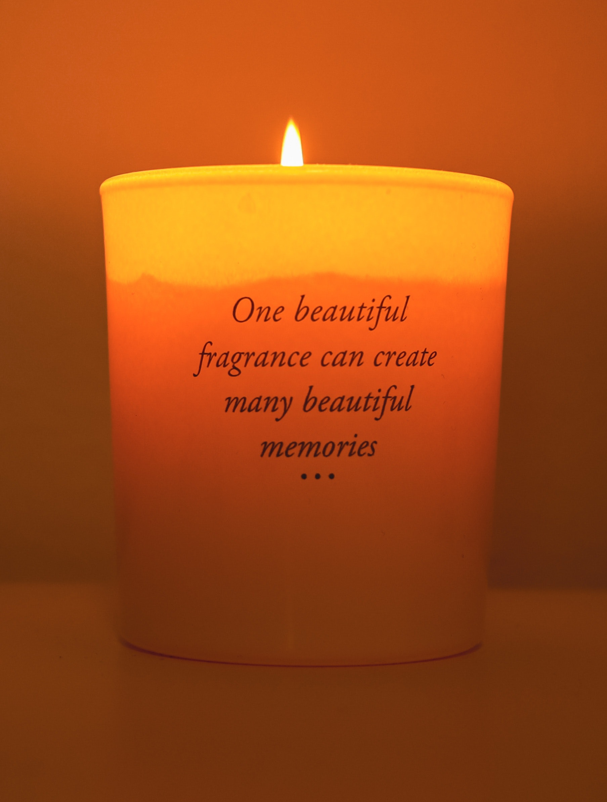

Scented Candles
Scented candles have the remarkable ability to transform an ordinary space into a captivating oasis, enveloping it in an alluring ambiance and evoking a range of emotions. These exquisite creations combine the gentle flicker of candlelight with captivating fragrances, captivating our senses and bringing moments of serenity and indulgence. In this article, we delve into the captivating world of scented candles, exploring their history, benefits, and the art of choosing the perfect scent for any occasion.
The Science Behind Scented Candles: Scented candles work through the process of diffusion, where the heat from the burning wick vaporizes the fragrant oils infused in the wax. As the fragrance molecules disperse into the air, they interact with our olfactory system, triggering a variety of emotional responses and enhancing our overall well-being.
Benefits of Scented Candles:
a) Aromatherapy: Scented candles play a vital role in aromatherapy, utilizing specific fragrances to create desired moods and promote relaxation, stress relief, focus, or rejuvenation. Lavender for calming, citrus scents for an energy boost, or eucalyptus for respiratory wellness are just a few examples of the benefits they offer.
b) Atmosphere Enhancement: Scented candles create a cozy and inviting atmosphere, adding warmth and depth to any space. Their soft glow and enticing fragrances enhance the ambiance for special occasions, quiet evenings, or moments of self-care.
Choosing the Perfect Scent:
a) Personal Preferences: Scent is subjective, so it's essential to choose scents that resonate with your personal preferences. Explore different fragrance families, such as floral, woody, citrus, or oriental, to find the scents that speak to you.
b) Occasion and Mood: Consider the purpose and desired ambiance. Energizing scents like lemongrass or peppermint are great for a home office, while relaxing scents like vanilla or chamomile are perfect for winding down after a long day.
c) Seasonal Selections: Embrace the seasons by selecting scents that match the time of year. Fresh florals for spring, tropical fruits for summer, cozy spices for fall, and warm woods for winter. Caring for Your Scented Candles: a) Proper Burning: To maximize the lifespan of your scented candle, ensure the first burn creates an even wax pool that reaches the edges of the container. Trim the wick before each use and avoid burning for extended periods to prevent overheating.
b) Storage: Protect candles from direct sunlight, extreme temperatures, and drafts. This helps maintain their fragrance and prevents discoloration or warping.